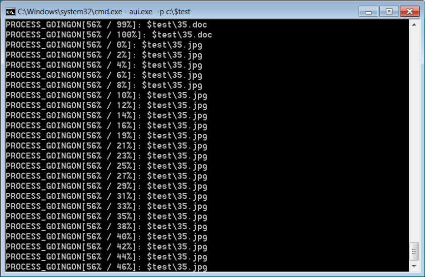
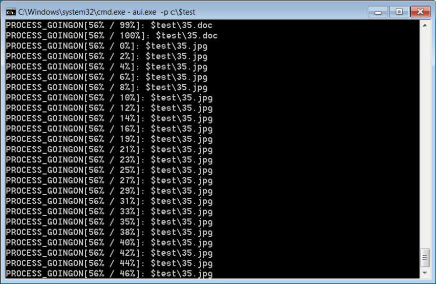

DOJ Seized Almost $500k in Cryptocurrency from Hackers
The Department of Justice seized “approximately half a million dollars” in cryptocurrency from accounts owned by alleged hackers.
On July 19, the Justice Department announced a complaint filed in the District of Kansas to forfeit approximately half a million dollars worth of cryptocurrency from “cryptocurrency accounts” owned by purported hackers from the Democratic People’s Republic of Korea (DPRK).
“Thanks to rapid reporting and cooperation from a victim, the FBI and Justice Department prosecutors have disrupted the activities of a North Korean state-sponsored group deploying ransomware known as ‘Maui,’” Deputy Attorney General Lisa O. Monaco said at the International Conference on Cyber Security. “Not only did this allow us to recover their ransom payment as well as a ransom paid by previously unknown victims, but we were also able to identify a previously unidentified ransomware strain. The approach used in this case exemplifies how the Department of Justice is attacking malicious cyber activity from all angles to disrupt bad actors and prevent the next victim.”
According to an announcement from the Department of Justice (DOJ), North Korean hackers used a ransomware strain called Maui to encrypt the files and servers of a hospital in Kansas in May 2021. After a week without access to their infrastructure and data, the hospital paid the hackers approximately $100,000 in Bitcoin to decrypt their files. After being infected by the ransomware, the hospital cooperated with law enforcement agencies, including the Federal Burea of Investigation (FBI). Because of their cooperation, the FBI identified “never-before-seen North Korean ransomware” and traced the Bitcoin payment to a money-launderer in China.

In April 2022, the FBI learned that the hackers had received another payment of approximately $120,000 worth of Bitcoin. An investigation into the payment revealed that a medical provider in Colorado had paid a ransom to the same hacking group.
In May 2022, the FBI seized two cryptocurrency accounts the hackers had used to receive ransom payments. After the seizure, the District of Kansas moved to forfeit the Bitcoin and return it to the healthcare providers.
“cryptocurrency accounts” = custodial wallets
Justice Department Seizes and Forfeits Approximately $500,000 from North Korean Ransomware Actors and their Conspirators | archive.org, archive.is, justice.gov
On July 19, the Justice Department announced a complaint filed in the District of Kansas to forfeit approximately half a million dollars worth of cryptocurrency from “cryptocurrency accounts” owned by purported hackers from the Democratic People’s Republic of Korea (DPRK).
“Thanks to rapid reporting and cooperation from a victim, the FBI and Justice Department prosecutors have disrupted the activities of a North Korean state-sponsored group deploying ransomware known as ‘Maui,’” Deputy Attorney General Lisa O. Monaco said at the International Conference on Cyber Security. “Not only did this allow us to recover their ransom payment as well as a ransom paid by previously unknown victims, but we were also able to identify a previously unidentified ransomware strain. The approach used in this case exemplifies how the Department of Justice is attacking malicious cyber activity from all angles to disrupt bad actors and prevent the next victim.”
Deputy Attorney General Lisa O. Monaco at the International Conference on Cyber Security
According to an announcement from the Department of Justice (DOJ), North Korean hackers used a ransomware strain called Maui to encrypt the files and servers of a hospital in Kansas in May 2021. After a week without access to their infrastructure and data, the hospital paid the hackers approximately $100,000 in Bitcoin to decrypt their files. After being infected by the ransomware, the hospital cooperated with law enforcement agencies, including the Federal Burea of Investigation (FBI). Because of their cooperation, the FBI identified “never-before-seen North Korean ransomware” and traced the Bitcoin payment to a money-launderer in China.

Maui ransomware encrypting files | BleepingComputer
In April 2022, the FBI learned that the hackers had received another payment of approximately $120,000 worth of Bitcoin. An investigation into the payment revealed that a medical provider in Colorado had paid a ransom to the same hacking group.
In May 2022, the FBI seized two cryptocurrency accounts the hackers had used to receive ransom payments. After the seizure, the District of Kansas moved to forfeit the Bitcoin and return it to the healthcare providers.
“cryptocurrency accounts” = custodial wallets
Justice Department Seizes and Forfeits Approximately $500,000 from North Korean Ransomware Actors and their Conspirators | archive.org, archive.is, justice.gov